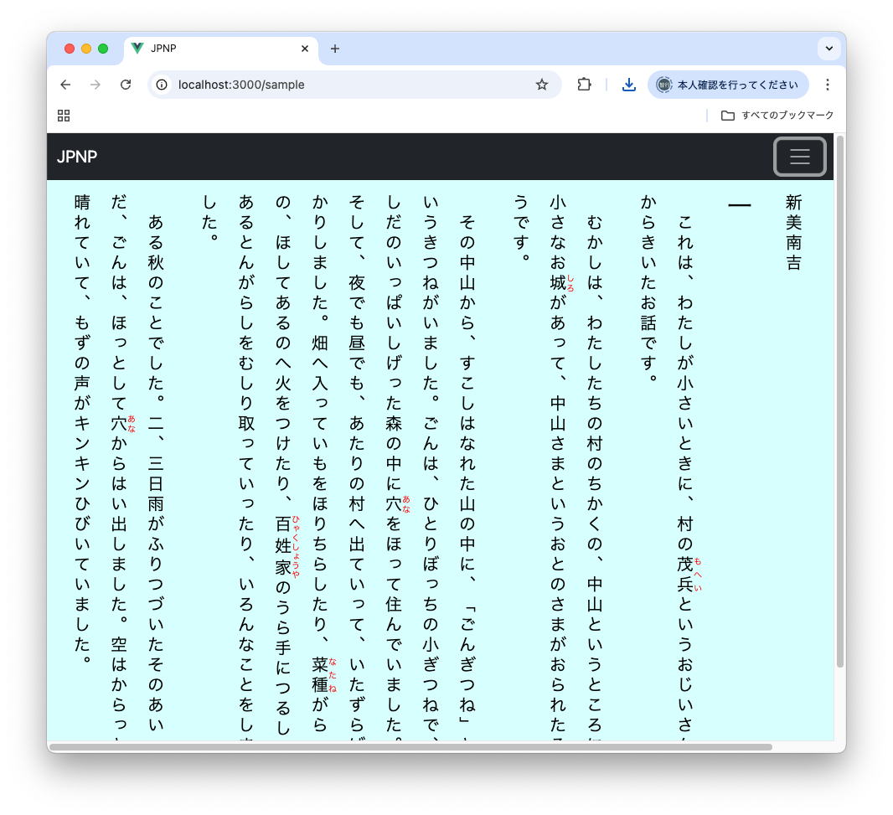
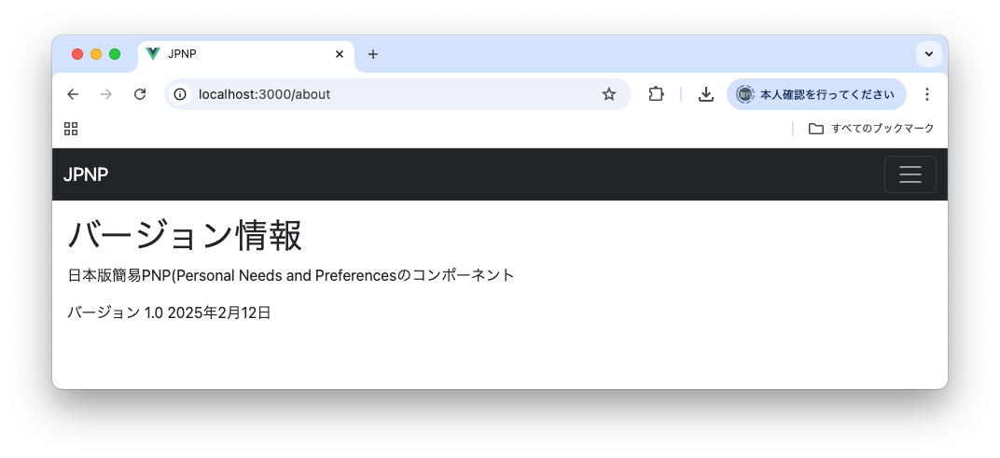

このソフトウェアは、日本版簡易 PNP(Personal Needs and Preferences)の設定とQRコードの生成・解析を行うVue.js 3の環境下で使用できるJavaScriptコンポーネントです。
本コンポーネントには、以下の機能があります。
各機能はそれぞれ独立したコンポーネントとして実装しています。それぞれの機能の詳細は以下の通りです。
JPNPで規定されている設定項目をUIで変更する機能です。設定できる項目は以下の通りです。
指定項目の値を変更すると、表示設定画面は指定結果を元にした表示方法にダイナミックに更新されます。
次の画面は表示方向を縦組に指定して、フォントサイズを20ポイントに変更したものです。

次の3つのプリセットボタンが用意されており、プリセットボタンを押すと代表的な色使いの設定に即座に切り替えられます。
プリセット1は白地に黒の文字、プリセット２は黒地に白の文字、プリセット３は青地に黄色の文字の色使いになっています。 本システムのでのデフォルトの設定値はプリセット１のものなので、プリセット１のボタンは設定のリセット機能を兼ねています。
サンプル表示ボタンを押すと、設定値を適用した文書のサンプルが表示されます。
設定したJPNPの内容をjsonファイルの形式で保存する機能を提供します。

「保存」ボタンを押すと、ローカルのデバイスにjson形式のJPNP設定ファイル(jpnp.json)を保存できます。
データ保存でローカルに保存したjson形式のJPNP設定ファイルをブラウザにアップロードして設定値とする機能です。

設定内容をQRコードで表示します。

この画面はブラウザの印刷機能を使って印刷できます。また、QRコードを右クリックすると表示されるポップアップメニューからQRコードの画像をファイルとして保存できます。

デバイスのカメラからJPNPのQRコードを読み取ります。カメラに前述の機能を使って印刷したQRコードをかざして、以前の設定値を復元できます。 こちらの機能を利用するには、デバイスにカメラが必要です。
カメラへのアクセスについてはブラウザによるセキュリティ上の縛りが存在し、以下の2通りについてのみ許可されています。
http:// のWEBサーバで提供されているコンテンツからは、カメラへのアクセスが行えません。
QRコードの画像ファイルをアップロードして、以前の設定値を復元する機能です。

JPNPの設定値を適用した文書を表示するサンプルです。

表示設定画面のサンプル文書表示は、こちらのコンポーネントを内部に埋め込んで実現しています。
本コンポーネントのバージョン番号を表示します。

開発用の機能です。内部に読み込まれているJPNPのjson情報がリアルタイムに表示されます。

node.js v20.12.2とVue 3.0.4の組合せでビルドしています。
最新のChrome, FireFox, Safari, Edgeで動作を確認しています。 WEBサーバにdist以下のビルド済みのツリーを置き、ブラウザからindex.htmlをアクセスすると本コンポーネントを組み込んだサンプルページが起動します。WEBサーバ側にはCGIやバックエンドに関する設定は不要です。
Vueには、ローカルマシンで自前で開発用サーバを起動する機能があります。 node.js v20とnpmがインストールされている環境で、まず、次の手順で必要なモジュールのインストールを行います。
$ rm -rf node_modules
$ npm install上記コマンドはMakefileのcleanとinstallのルールを用いても実行できます。
これでVue.jsを始めとする動作に必要なJavaScriptのモジュールがnode_modulesのディレクトリ下にインストールされます。 インストールが完了したらnpm run devのコマンドで開発用サーバーを起動できます。
$ npm run dev
> jpnp@0.0.0 dev
> vite
The CJS build of Vite's Node API is deprecated. See https://vite.dev/guide/troubleshooting.html#vite-cjs-node-api-deprecated for more details.
VITE v6.1.0 ready in 124 ms
➜ Local: http://localhost:3000/
➜ Network: use --host to expose
➜ press h + enter to show help
上記コマンドはMakefileのrunのルールを用いても実行できます。
ブラウザから画面に表示されるURLにアクセスすると、本コンポーネントのページが表示されます。
開発用サーバではビルドは不要ですが、本番のデプロイメントのためにはビルドが必要です。Vue.jsは大量のコンポーネントで構成されていますが、これを1つのJavaScriptファイルにコンパイルするのがビルドのプロセスです。
以下のコマンドでビルドを行ってください。
$ rm -rf dist
$ npm npm run build上記コマンドはMakefileのbuildのルールを用いても実行できます。
ビルドが完了すると、distディレクトリ下に次のようなコンパイル結果のファイルが生成されます。
$ ls -lR dist
total 24
drwxr-xr-x 4 kudou staff 128 Feb 12 22:32 assets
-rw-r--r-- 1 kudou staff 4286 Feb 12 22:32 favicon.ico
-rw-r--r-- 1 kudou staff 833 Feb 12 22:32 index.html
dist/assets:
total 928
-rw-r--r-- 1 kudou staff 46 Feb 12 22:32 index-Bwborzv7.css
-rw-r--r-- 1 kudou staff 470945 Feb 12 22:32 index-CflQ3Tj3.jsこのツリーをデプロイメント用のサーバにセットすれば、本機能が利用できます。
Dockerを使ってnginxのコンテナを動作させWEBサーバを起動する設定ファイルを用意しました。 以下のコマンドでDockerのコンテナをビルドし、起動できます。
$ make docker-build
$ make docker-upこれで8400番のポートを通じてdistディレクトリ（上記のビルド結果が格納されたツリー）の内容を公開するWEBサーバが立ち上がります。
Dockerコンテナのサーバの停止は、次のようにします。
$ make docker-down今回開発したVue.jsのコンポーネントの主たるソースファイルは次の通りです。